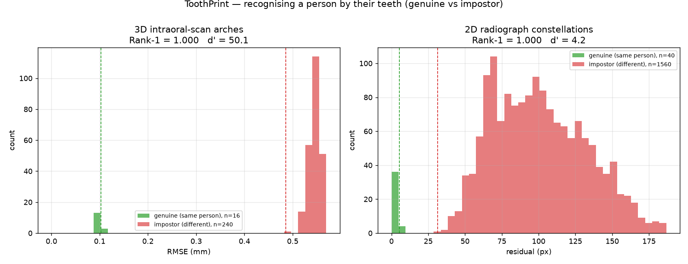
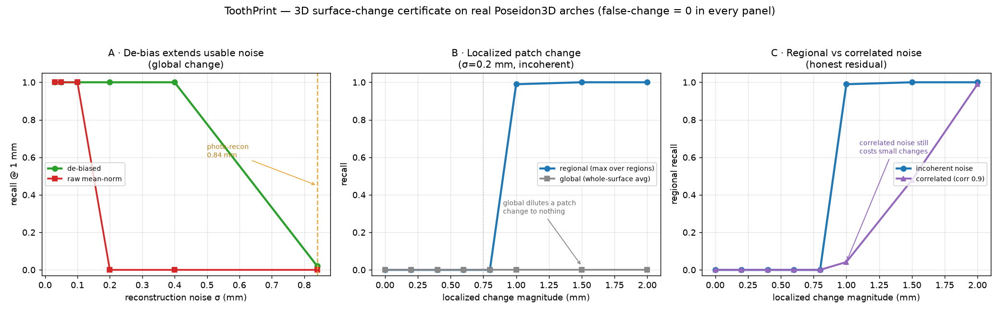
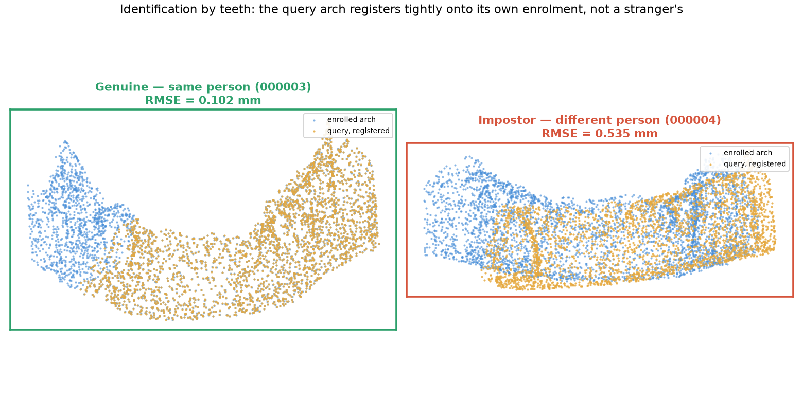
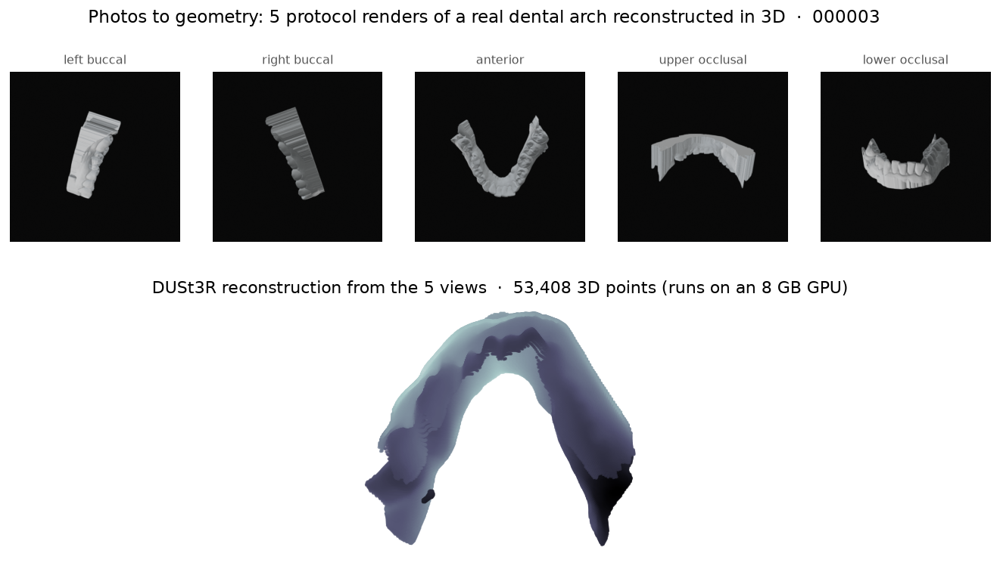
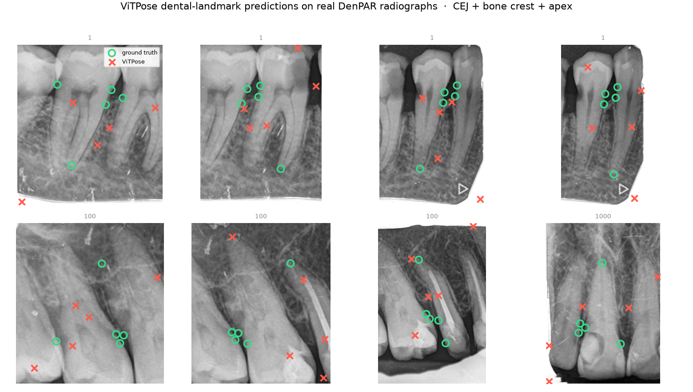

Identification
Match a scan or radiograph against a gallery by registration distance. The closest enrolment is the person.
Forensic-grade dental biometrics · certified
ToothPrint reads the dentition three ways — who it belongs to, whether it has changed, and what its surface is — and returns a certificate, not a guess. Each verdict carries a finite-sample statistical guarantee, validated on real intraoral scans and radiographs.
Built on three primitives — detection, registration, conformal calibration — applied to one durable signal.
Match a scan or radiograph against a gallery by registration distance. The closest enrolment is the person.
Certify a bone-level change only when its conformal interval clears the threshold. The false-alarm rate is bounded.
Certify a 3D surface change against reconstruction noise — stable, changed, or honestly uncertain.
01 · Identity
A dental arch — its crown contours, cusps, and gingival margin — is individual. ToothPrint enrols each person, then identifies a fresh scan by the smallest registration error. A genuine re-scan snaps into place; a stranger's anatomy cannot.

3D: FPFH descriptors → RANSAC → ICP → smallest RMSE wins. 2D: the per-tooth landmark constellation, scale-normalised so magnification cancels, aligned by rigid ICP.
02 · Change
Comparing two radiographs is hard: re-positioning, exposure, and detector error swamp a real sub-millimetre change. ToothPrint measures the change differentially — registering the bone-margin patch between timepoints, referenced to a stationary crown — driving the noise floor to a tenth of a pixel.

A ViTPose detector localises each tooth; sub-pixel template matching measures the margin shift; a conformal certificate decides — and never certifies change it cannot distinguish from acquisition noise.
03 · Surface
From an intraoral scan or a handful of photos, ToothPrint reconstructs the arch, refines it with screened-Poisson denoising, and certifies a surface change against the reconstruction's own error — so swelling or recession is flagged, and scanner noise is not.

Reconstruction (3D Gaussian Splatting, runs on an 8 GB GPU) → screened-Poisson refinement → scale-aware surface error → conformal certificate. Pure-numpy from the error metric onward.
Evidence · real data, real outputs
Not renders of an idea — these are the system's own outputs on public dental data: landmarks placed on real X-rays, an arch reconstructed from photographs, and a query that finds its owner.



The guarantee, in your hands
Drag the measured change. The conformal interval moves with it. The verdict turns changed only when the whole interval clears the change threshold, and stable only when it sits below the stable threshold. Everywhere between, it abstains — on purpose.
interval = measured ± conformal radius · radius grows with reconstruction noise · thresholds: stable 0.35 mm / change 0.75 mm
Intraoral scan or periapical radiograph
Teeth + landmarks (ViTPose) or arch point cloud
2D/3D ICP · FPFH · sub-pixel template matching
Conformal interval → identity, change, surface